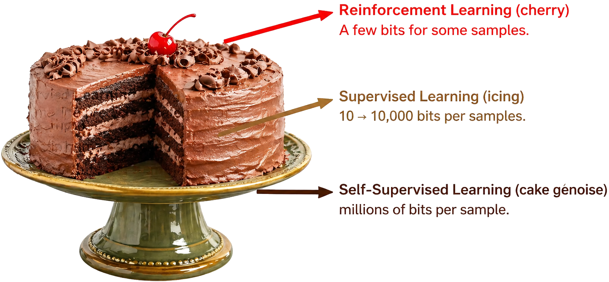

Reinforcement learning has become the shiny final step in foundation-model post-training. That status is deserved, but also dangerous. Our position is simple: RL should adjust foundation models after pretraining and cold-start supervision, not be abused as the default recipe for creating capabilities from scratch.

RL is powerful because it can push a model toward behaviors we can reward: correctness, constraint satisfaction, instruction following, tool-use discipline, and long-horizon consistency. But RL is also expensive and brittle. It depends on sampling, reward design, stabilization tricks, and careful evaluation. When used too early, it often spends compute searching through a behavior space that has not yet been shaped into something reliable.
The key distinction is capability creation vs. capability adjustment. Pretraining and cold-start supervision establish usable structure; RL mostly reallocates probability mass toward better trajectories the model can already express.
Five Pillars
Pillar 1
RL should be used to adjust foundation models after pretraining, particularly when a model remains unsatisfactory in certain aspects.
Across recent R1-style pipelines, RL is most useful after the model can already produce the desired behavior sometimes. It then shifts probability mass toward more reliable, correct, and constraint-compliant trajectories.
Pillar 2
RL is extremely expensive and inefficient, and therefore should not be used excessively during the pretraining stage or the cold-start stage.
The cost of RL is structural: repeated sampling, reward design, and stabilization all matter. If the behavior manifold has not been shaped yet, much of the RL budget is spent exploring unstable space rather than refining useful behavior.
Pillar 3
RL does not enable or activate a model’s reasoning capability; that capability is already established during the SFT stage. Instead, RL serves to further enhance the model’s existing reasoning ability.
This is the core causal claim. SFT and cold-start traces provide reasoning structure; RL improves selection, consistency, and constraint satisfaction. “RL improves reasoning” is plausible, but “RL creates reasoning from scratch” needs much stronger evidence.
Pillar 4
The reward functions used in RLVR should be typically simple rather than over-engineered, yet they remain highly effective.
Verifiable rewards are powerful because they are auditable. Simple checks, tests, format constraints, and deterministic validators are easier to debug than opaque reward models, and they make failure modes clearer when optimization starts gaming the proxy.
Pillar 5
Self-Supervised Reinforcement Learning (SSRL) should be an effective way for world models to develop self-evolving capabilities.
Self-evolution is promising when the loop is grounded in structured interaction, memory, and verifiable progress signals. Without those anchors, self-generated optimization can drift into self-confirming errors or reward hacking.
Why “More RL” Is Not a Strategy
The popular “RL creates reasoning” story is too coarse. RL can amplify reasoning-like behavior, and sometimes dramatically. But a stronger causal claim requires stronger evidence: compute-matched comparisons, cold-start ablations, verifier stress tests, and clear reporting of sampling budgets. Without that discipline, we risk crediting RL for structure that was actually supplied by pretraining, data curation, prompt formats, or supervised traces.
Reward design is another reason to be cautious. More sophisticated rewards are not automatically safer. If the proxy is wrong, a stronger optimizer can simply exploit it more effectively. This is why we argue for reward minimalism: use checkable signals where possible, report verifier failures, and make the optimization target easy to audit.
Practical Guidelines
Before applying RL, ask three questions: Can the model already do the behavior sometimes? Can we diagnose the failures? Can success be audited with a simple signal? If the answer is yes, RL is a strong adjustment tool. If not, the cheaper and clearer path is often better supervision, better data, better prompting, or a better verifier.
- Use stage discipline by default: pretraining, cold-start supervision, then RL adjustment.
- State falsifiable RL claims: separate the effect of RL from scaffolds, data curation, prompt formats, and verifiers.
- Make cost visible: report sampled trajectories, reward definitions, stabilizers, verifier pass rates, and regressions.
Call to Action
Researchers should stop treating RL as a magic capability dial. Companies and institutions should require transparency around sampling cost, reward definitions, and stabilizers when RL is claimed to replace supervision. The ML community should build standards that distinguish capability creation from refinement.
The field does not need less RL. It needs more disciplined RL: staged after cold-start alignment, grounded in auditable rewards, and reported with compute transparency. RL should be the cherry, not the whole cake.